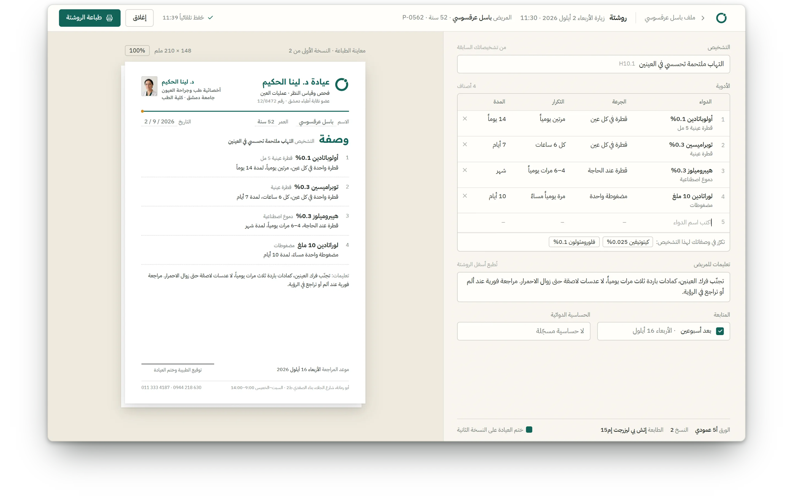
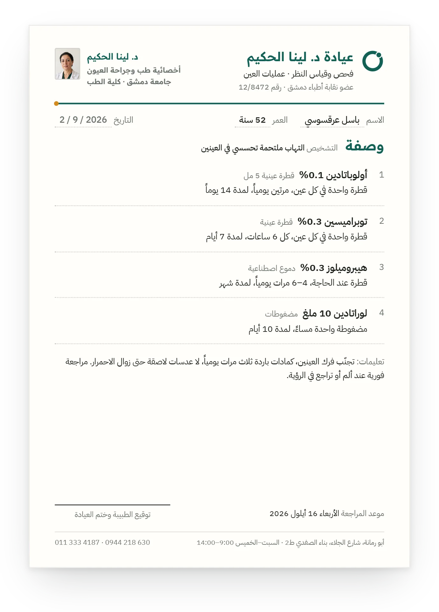
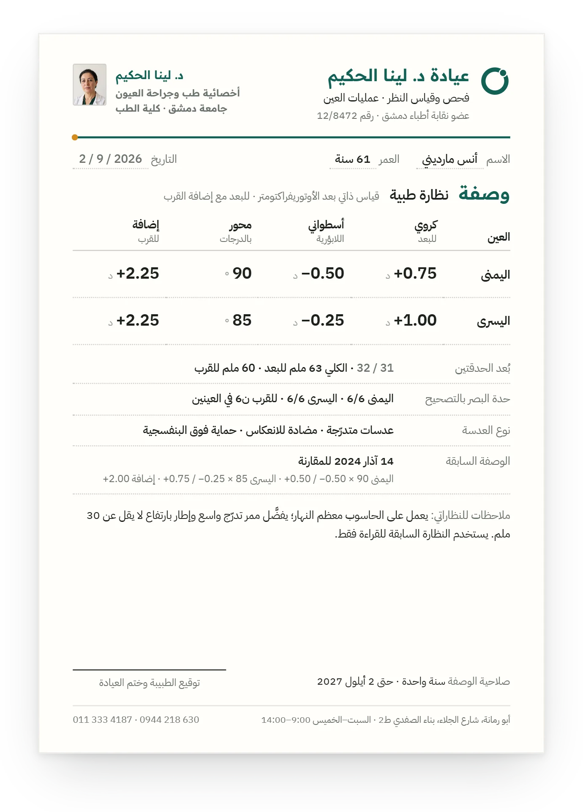
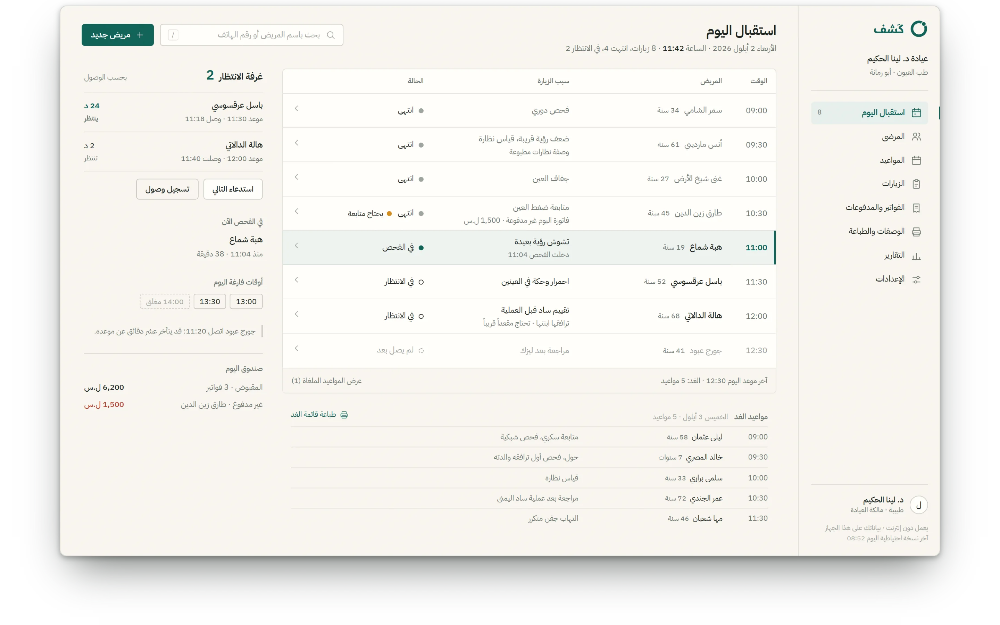

الفصل الثامن · كَشف
كَشف KASHF
كَشف. عيادة تطبع على الورق وتصمد أمام انقطاع الكهرباء.
الحركة الأولى · الطباعة
- روشتة · باسل عرقسوسي
- وصفة نظارة · أنس مارديني

-
01 · A5 · 148 × 210 مم
الزيارة تُكتب على الشاشة، والمريض يخرج بالورقة. الروشتة تُطبع A5 بترويسة العيادة نفسها.
-
02 · A5 · يمنى / يسرى
عيادة العيون تطبع ورقة أخرى: وصفة النظارة، بديوبتراتها وإشاراتها، من الترويسة نفسها.


القصة
نظام عربي لسطح المكتب يعمل دون اتصال لعيادة خاصة واحدة في سوريا: قائمة اليوم، وملف مريض يحفظ نفسه أثناء الكتابة، وروشتة تُطبع A5، وفوترة بالليرة والدولار بلا تحويل.
عن المنتج
كَشف نظام عربي لسطح المكتب لأطباء العيادات الخاصة في سوريا: قائمة اليوم، ملف مريض بخط زمني للزيارات يحفظ نفسه أثناء الكتابة، روشتة تُطبع A5 بترويسة العيادة، وصفة نظارة لعيادات العيون، وفوترة بالليرة والدولار جنباً إلى جنب. دون اتصال، مشفَّر، وتطبيق واحد لكل اختصاص.
التحدي
- 01
كل اختصاص زيارة مختلفة: طبيب القلب وطبيب العيون يحتاجان حقولاً ودرجات وطبعات مختلفة، من تطبيق واحد.
- 02
الورق هو ما يخرج به المريض: الروشتة A5 ووصفة النظارة يجب أن تُطبعا صحيحتين بالترويسة، من دون سحابة.
- 03
ساعتان إلى ست من الكهرباء في اليوم: الزيارة تحفظ نفسها أثناء الكتابة والملف يصمد أمام الانقطاع.
المنهج
محرّك قوالب يقوده المخطط، مخطط حقول لكل اختصاص ولقطة لكل زيارة، بدرجات لا تعطّل الحفظ أبداً؛ ملف إس كيو لايت مشفَّر؛ بحث يفهم العربية بلا تشكيل ولا همزات؛ والمستندات المطبوعة مبنية كمستندات قائمة بذاتها.
دوري
مصمّم المنتج والباحث والمهندس الوحيد: المواصفة السريرية لواحد وعشرين اختصاصاً، وثيقة المتطلبات، الهوية، التطبيق وقوالب الطباعة.
الحركة الثانية · اليوم والملف
اليوم والملف
في 11:42 تعرض قائمة اليوم ثماني زيارات: أربع انتهت، وواحدة في الفحص، واثنتان بالانتظار، وواحدة لم تصل بعد. صفّ طارق زين الدين انتهى ويحتاج متابعة؛ وفي ملفه الزيارة القادمة محدّدة: 2 كانون الأول 2026. نقطة كهرمانية واحدة في كل مكان، والخيط بينهما.


الورق أولاً. صامد أمام الانقطاع. تطبيق واحد لكل اختصاص.
- 01العيون
- 02الأسنان
- 03الباطنية
- 04القلبية
- 05الأطفال
- 06النسائية والتوليد
- 07الجلدية
- 08العصبية
- 09العظمية
- 10الأنف والأذن والحنجرة
- 11المسالك البولية
- 12الغدد والسكري
- 13الصدرية
- 14الكلى
- 15الأورام
- 16النفسية
- 17الروماتيزم
- 18الهضمية
- 19التغذية
- 20الطب العام
- 21أخرى
21 موصوفاً · عيادة العيون بُنيت أولاً
الحركة الثالثة · شاشة عيادة العيون
شاشة عيادة العيون
أنس مارديني، 61 عاماً، قياس الساعة 09:38: اليمنى +0.75 / −0.50 × 90، واليسرى +1.00 / −0.25 × 85، إضافة +2.25، عدسات متدرّجة. الوصفة السابقة من آذار 2024 في الجانب للمقارنة، وزرّ واحد يطبعها A5.
 +0.75 / −0.50 / 90°: ديوبترات بإشارتها والمحور على ميناء
14 آذار 2024، محفوظة للمقارنة
+0.75 / −0.50 / 90°: ديوبترات بإشارتها والمحور على ميناء
14 آذار 2024، محفوظة للمقارنة
النتائج
اختصاصاً موصوفاً، وعيادة العيون بُنيت أولاً
مخطط حقول لكل اختصاص، وشاشة زيارة لكل اختصاص
عملتان جنباً إلى جنب، بلا تحويل
الليرة والدولار، لكلٍّ رصيده
ساعات كهرباء في اليوم بُني لها
الزيارة تحفظ نفسها أثناء الكتابة
الفصل الثامن · اكتمل
حقل الفصل التالي يغمر الشاشة